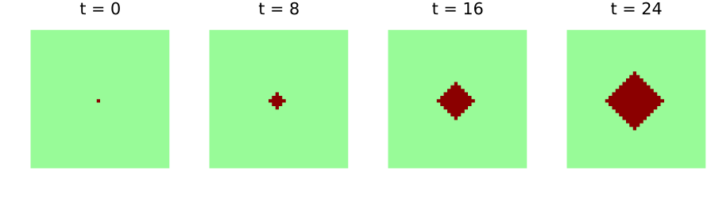
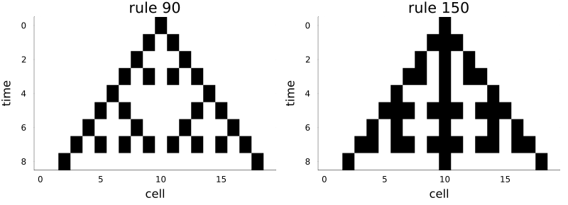

Products and multi-layer models
Simon Frost
- Overview
- Products of full shifts
- Two layer updates
- The pair is the model
- The laws of a product
- Running layers side by side
- Copying and deleting
Overview
Many ecological cellular automata have several layers: a host and a pest, a crop and a pathogen, a forest and a fire. The category of cellular automata over a group has products (Castillo-Ramirez et al. 2025). The state of a two-layer model is a configuration of pairs, and any two automata from the same domain pair into one automaton into the product. A two-layer model is therefore exactly the pair of its two layer updates, each of which may read both layers. This vignette builds such a model, a host plant and an aphid vector, and checks the laws that make it a product.
ENV["GKSwstype"] = "100"
using CategoricalCellularAutomata
using CellularAutomataCore: CellularAutomataCore, CAProblem, solve
using Plots
using RandomProducts of full shifts
The objects of the category are full shifts A^G, all configurations with values in an alphabet A. Their product is the full shift of pairs, and its configurations hold tuples:
G = TorusGroup(40, 40)
H = FullShift(FinAlphabet(Int8[0, 1]), G) # host: healthy, infected
V = FullShift(FinAlphabet(Int8[0, 1, 2, 3]), G) # aphid density
X = otimes(H, V)
(X, length(alphabet(X)))(FullShift(Int8[0, 1] ⊗ Int8[0, 1, 2, 3], TorusGroup(40, 40)), 8)The product is strictly associative: (A ⊗ B) ⊗ C and A ⊗ (B ⊗ C) are the same full shift, whose values are flat tuples (a, b, c).
Two layer updates
Each layer has its own update, a cellular automaton from the product (it may read both layers) to its own layer. A healthy plant is infected when two or more aphids are on it, and an infected plant stays infected:
host = CellularAutomaton(G, [(0, 0)], p -> begin
h, v = only(p)
return h == 1 || v >= 2 ? Int8(1) : Int8(0)
end; dom=X, codom=H)CellularAutomaton over TorusGroup(40, 40) with memory set [(0, 0)]: Int8[0, 1] ⊗ Int8[0, 1, 2, 3] → Int8[0, 1]Aphids breed to the maximum density on infected plants and otherwise spread from crowded cells, losing one level of density with each move. The update reads the cell and its four nearest neighbours:
nearest = [(0, 0), (1, 0), (39, 0), (0, 1), (0, 39)]
aphids = CellularAutomaton(G, nearest, p -> begin
h = p[1][1]
h == 1 && return Int8(3)
return Int8(max(0, maximum(q[2] for q in p) - 1))
end; dom=X, codom=V)CellularAutomaton over TorusGroup(40, 40) with memory set [(0, 0), (1, 0), (39, 0), (0, 1), (0, 39)]: Int8[0, 1] ⊗ Int8[0, 1, 2, 3] → Int8[0, 1, 2, 3]The pair is the model
The pair of the two updates is one cellular automaton from the product to itself: the whole model. Its memory set is the union of the two memory sets.
model = pair(host, aphids)
(dom(model) == codom(model) == X, memory_set(model))(true, [(0, 0), (1, 0), (39, 0), (0, 1), (0, 39)])It runs on CellularAutomataCore like any other automaton, with a state array of tuples:
u0 = fill((Int8(0), Int8(0)), 40, 40)
u0[20, 20] = (Int8(1), Int8(0))
sol = solve(CAProblem(model, u0, 24); saveat=8)
plot([heatmap(first.(u); c=[:palegreen, :darkred], clims=(0, 1), colorbar=false,
aspect_ratio=:equal, framestyle=:none, title="t = $t")
for (t, u) in zip(sol.t, sol.u)]...; layout=(1, 4), size=(900, 250))
Aphids breeding on the first infected plant raise the density on its neighbours, which become infected in turn, and so the infection spreads as a front. Aphids move only to the four nearest cells, so the front is a diamond: its distance from the first plant, in steps along the grid, grows like this:
radius(u) = maximum(abs(I[1] - 20) + abs(I[2] - 20) for I in findall(==(1), first.(u)))
full = solve(CAProblem(model, u0, 24))
[t => radius(u) for (t, u) in zip(full.t, full.u) if t % 4 == 0]7-element Vector{Pair{Int64, Int64}}:
0 => 0
4 => 1
8 => 2
12 => 4
16 => 5
20 => 6
24 => 8About one cell every three steps: one step for the aphids to breed on a newly infected plant, one to spread to its neighbours, and one for those to become infected.
The laws of a product
Composing the pair with the projections gives back each update, and these equalities hold for every configuration, because == compares local rules:
(compose(model, proj1(H, V)) == host, compose(model, proj2(H, V)) == aphids)(true, true)The pair is also the only automaton with that property. Any automaton into the product is the pair of its two projections:
pair(compose(model, proj1(H, V)), compose(model, proj2(H, V))) == modeltrueTogether these say that a two-layer model is its two layer updates and nothing more: to change one layer’s dynamics is to change one component of the pair.
Running layers side by side
otimes runs two automata on two independent layers, each reading only its own. On the product of two rings it runs rule 90 and rule 150 side by side, and it is the pair of each rule after the projection onto its layer:
Z = CyclicGroup(20)
B = FinAlphabet(0:1)
rule90 = CellularAutomaton(Z, [19, 1], p -> xor(p...); dom=B)
rule150 = CellularAutomaton(Z, [19, 0, 1], p -> xor(p...); dom=B)
Y = dom(rule90)
side_by_side = otimes(rule90, rule150)
side_by_side == pair(compose(proj1(Y, Y), rule90), compose(proj2(Y, Y), rule150))truez = Configuration(Z, [(i == 10 ? 1 : 0, i == 10 ? 1 : 0) for i in 0:19])
layers = [parent(z)]
for _ in 1:8
z = side_by_side(z)
push!(layers, parent(z))
end
grid = permutedims(reduce(hcat, layers))
plot(heatmap(0:19, 0:8, first.(grid); c=[:white, :black], yflip=true, colorbar=false,
title="rule 90"),
heatmap(0:19, 0:8, last.(grid); c=[:white, :black], yflip=true, colorbar=false,
title="rule 150"); layout=(1, 2), size=(800, 290), xlabel="cell", ylabel="time",
bottom_margin=5Plots.mm, left_margin=3Plots.mm)
Copying and deleting
A cartesian category also has a copy mcopy(X) : X → X ⊗ X and a deletion delete(X) : X → munit(), and for deterministic automata both are natural: copying the output of an automaton is the same as running it twice on a copy of the input.
(compose(rule90, mcopy(Y)) == pair(rule90, rule90),
compose(rule90, delete(Y)) == delete(Y))(true, true)This is what fails for stochastic automata: two independent runs of a random rule are not the same as one run copied. That is the subject of the stochastic vignette, where cellular automata live in a Markov category rather than a cartesian one.
Castillo-Ramirez, Alonso, Alejandro Vazquez-Aceves, and Angel Zaldivar-Corichi. 2025. Categorical Products of Cellular Automata. https://arxiv.org/abs/2503.21567.